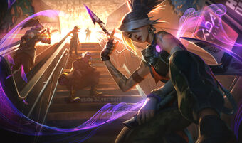

Q - FIVE POINT STRIKE Akali throws out five kunai, dealing damage based on her bonus AD and AP and slowing. W - TWILIGHT SHROUD Akali drops a cover of smoke and briefly gains Move Speed. While inside the shroud, Akali becomes invisible and unable to be selected by enemy spells and attacks. Attacking or using abilities will briefly reveal her. E - SHURIKEN FLIP Flip backward and fire a shuriken forward, dealing magic damage. The first enemy or smoke cloud hit is marked. Re-cast to dash to the marked target, dealing additional damage. R - PERFECT EXECUTION Akali leaps in a direction, damaging enemies she strikes. Re-cast: Akali dashes in a direction, executing all enemies she strikes.

Q - CRESCENT STRIKE Unleashes a bolt of lunar energy in an arc dealing magic damage. Afflicts enemies struck with Moonlight, revealing them if they are not stealthed for 3 seconds. W - PALE CASCADE Diana creates three orbiting spheres that detonate on contact with enemies to deal damage in an area. She also gains a temporary shield that absorbs damage. If her third sphere detonates, the shield gains additional strength. E - LUNAR RUSH Becomes the living embodiment of the vengeful moon, dashing to an enemy and dealing magic damage. Lunar Rush has no cooldown when used to dash to an enemy afflicted with Moonlight. All other enemies will have the Moonlight debuff removed regardless of whether they were the target of Lunar Rush. R - MOONFALL Diana reveals and draws in all nearby enemies and slows them. If Diana pulls in one or more enemy champions, the moonlight crashes down onto her after a short delay, dealing magic damage in an area around her, increased for each target beyond the first pulled.
Q - DEATH SENTENCE Thresh binds an enemy in chains and pulls them toward him. Activating this ability a second time pulls Thresh to the enemy. W - DARK PASSAGE Thresh throws out a lantern that shields nearby allied Champions from damage. Allies can click the lantern to dash to Thresh. E - FLAY Thresh's attacks wind up, dealing more damage the longer he waits between attacks. When activated, Thresh sweeps his chain, knocking all enemies hit in the direction of the blow. R - THE BOX A prison of walls that slow and deal damage if broken.
Q - PIERCING ARROW Varus readies and then fires a powerful shot that gains extra range and damage the longer he spends preparing to fire. W - BLIGHTED QUIVER Passive: Varus' basic attacks deal bonus magic damage and apply Blight. Varus' other abilities detonate Blight, dealing magic damage based on the target's maximum Health. Active: Varus empowers his next Piercing Arrow. E - HAIL OF ARROWS Varus fires a hail of arrows that deal physical damage and desecrate the ground. Desecrated ground slows enemies' Move Speed and reduces their self healing and regeneration. R - CHAIN OF CORRUPTION Varus flings out a damaging tendril of corruption that immobilizes the first enemy champion hit and then spreads towards nearby uninfected champions, immobilizing them too on contact.

Q - RAMPAGE Hecarim cleaves nearby enemies dealing physical damage. If Hecarim damages at least one enemy, he increases the damage and lowers the cooldown of subsequent Rampages. W - SPIRIT OF DREAD Hecarim deals magic damage to nearby enemies for a short duration. Hecarim gains Health equal to a percentage of any damage those enemies suffer. E - DEVASTATING CHARGE Hecarim gains increasing Move Speed and can move through units for a short duration. His next attack knocks the target back and deals additional physical damage based on the distance he has traveled since activating the ability. R - ONSLAUGHT OF SHADOWS Hecarim summons spectral riders and charges forward, dealing magic damage in a line. Hecarim creates a shockwave when he finishes his charge, causing nearby enemies to flee in terror.